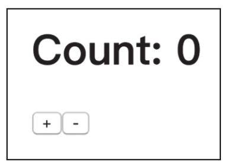
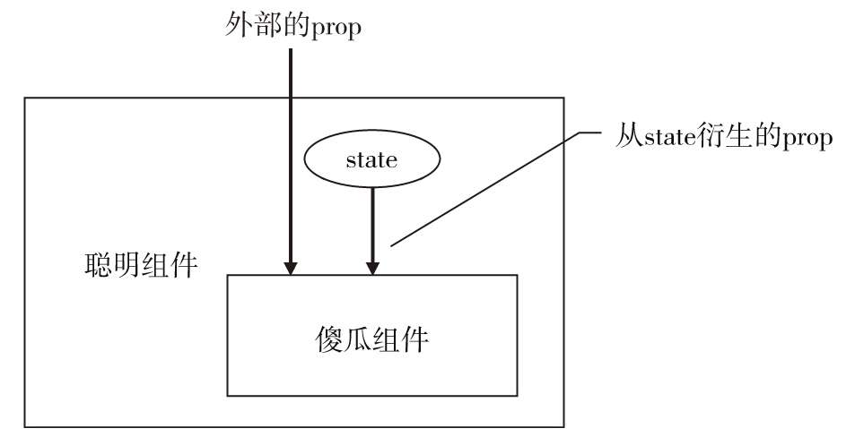

React的知识点很多，如果读者希望了解更多，可参照我写的《深入浅出React和Redux》，不过，即使读者之前没有接触过React，从上一节学习到的知识也足够我们继续和RxJS的组合。
在这个过程中，我们要实现一个很简单的网页应用，包含一个计数器Counter的功能。首先用最简单、最原始的React方式来实现，然后再介绍这个应用如何利用RxJS来改进。
这个Counter功能可以算是网页框架的Hello World，虽然简单但是却足够展示框架如何工作，在Counter中会显示一个计数数字和两个按钮，其中一个按钮显示+，点击之后计数数字会增加1，另一个按钮显示-，点击之后计数减1，就是这么一个简单的功能。
1.使用create-react-app
在上一节中我们简单介绍了React的使用方法，不过只有简单的代码示例，还没有投入实战，接下来我们来创建真正能够运行的React应用。
感谢Facebook，他们不仅提供了React这个开源的框架，还贡献了一个专门用来创建简单React应用的工具叫做create-react-app，有了这个工具，我们不用纠结于webpack等工具的复杂的配置，可以很轻松地构建利用React的网页应用，十分适合初学者。本书中所有与React相关的应用都通过create-react-app来创建的。
通过npm下载安装create-react-app，在你的命令行环境下执行下列命令：
npm install -g create-react-app
当安装结束之后，你的命令行下就多了一个新的可执行命令create-react-app，这个命令可以用来创建一个可运行的React应用。
在命令行下进入一个你最喜欢存放代码的目录位置，执行create-react-app，参数是你想要在当前目录下创建的子目录名，比如，我们想要创建的应用太简单，就叫做simple，于是执行的命令就是这样：
create-react-app simple
这个指令会产生一个simple目录，并在这个目录下创建一个基于Node.js的应用，增加全套的代码，并执行npm install或者yarn命令，这个过程可能要花费一些时间，当一切都结束的时候，你就可以进入这个目录，然后用Node.js应用的传统方法启动这个应用了，如下所示：
cd simple npm start
然后，在你最喜欢的浏览器中访问http://localhost:3000/ 就可以看到一个网页应用，不过，我们对这个默认的网页应用展示什么兴趣不大，我们的目标是要创造一个Counter组件，对这个应用我们要进行一些改造。
2.创造Counter组件
我们先搞清楚这个React应用的关键入口，在src/index.js中，可以看到下面这样的代码：
import React from 'react';
import ReactDOM from 'react-dom';
import App from './App';
ReactDOM.render(<App />, document.getElementById('root'));
ReactDOM.render是往网页里装载React根级别组件的函数，第一个参数就是整个应用根级别的React组件，第二个参数是装载组件的DOM节点。
在这个应用中，装载根组件的DOM是id为root的元素，在public/index.html文件中定义了网页应用的HTML框架，在里面你可以找到这个root元素，在HTML中这个元素内容当然是空的，因为它只是React的游乐场，真正的内容是由React在运行时动态填充的。
这个应用根级别的组件是App，定义在src/App.js文件中，我们打开这个文件，里面的内容很多，不过我们用不上这些代码，所以把其中的内容完全替换为下面的代码：
import React, { Component } from 'react';
import Counter from './Counter';
import './App.css';
class App extends Component {
render() {
return (
<div className="App">
<Counter />
</div>
);
}
}
export default App;
这个App扮演根级别组件的作用，通过导入App.css，引入了一些CSS样式，在render函数中应用了App.css中定义的CSS类App。
注意
使用CSS类要使用一个特殊的prop叫做className，这会在产生的DOM元素上增加class属性，但是为什么在JSX中不干脆用class而要求用className呢？这是因为JSX最终都要被babel转译成JavaScript代码，而class是JavaScript的保留字，为了避免冲突，JSX要求这个属性只能是className。
在src/App.css中的CSS代码如下：
.App {
margin: 0 auto;
max-width: 600px;
}
除此之外，App.js只是一个容器，包含了Counter这个组件。实际上，因为App这个组件十分简单，我们完全可以把它定义为纯函数形式，在这里我们依然用ES6类的形式，纯粹是因为习惯，因为一般根级别组件可能将来会包含一些state。
上面介绍的只是这个网页应用的大致代码框架，接下来才是重头戏，即Counter组件的定义。我们创建一个src/Counter.js文件，代码如下：
import React from 'react';
export default class Counter extends React.Component {
state = {count: 0}
onIncrement() {
this.setState({count: this.state.count + 1});
}
onDecrement() {
this.setState({count: this.state.count - 1});
}
render() {
return (
<div>
<h1>Count: {this.state.count}</h1>
<button onClick={this.onIncrement.bind(this)}>+</button>
<button onClick={this.onDecrement.bind(this)}>-</button>
</div>
);
}
}
在之前我们创建过一个CountButton组件，所以读者看到这样的代码理解起来应该不会太困难。相对于CountButton，Counter组件最大的不同是有两个按钮，对应也有两个按钮点击处理函数onIncrement和onDecrement，分别对state中的count字段做加1和减1的操作。
create-react-app创造的应用会做热加载，也就是无需重启应用，也无需刷新网页，代码的修改就会体现在网页中。做完上面的修改，在浏览器网页中我们会看到如图13-4所示界面。

图13-4 Counter的界面
点击显示“+”按钮，可以看到Count后面的数字变为1，连续点击“+”，这个数字会持续增加，当点击“-”按钮，这个数字就会下降。
恭喜你，你刚刚创建了一个可运行的Counter组件！在本书配套的GitHub代码库的chapter-13/react-rxjs/simple目录下，可以找到这个网页应用的完整代码，不过读者最好亲自动手操作一遍，这样理解会更加深刻。这只是一个开始，接下来我们会在这个项目的基础上持续改进。
3.分离组件
React既可以渲染用户界面，又有自己的一套状态管理方式，这从上一小节中的Counter组件就可以看得出来，Counter工作得很好，但是，还是存在一点欠缺，就是渲染和state管理混在一个组件中了。
回想最初介绍的React组件，完全可以用纯函数表示，可以很单纯地只根据prop来渲染用户界面，这种组件附和函数式编程的思想，具备纯函数的一切好处。但是，像Counter这样的组件有自己的状态，这个需求单单靠prop是搞不定的，所以又必须要有组件级别的state存在，那怎么解决这个困境呢？
解决这种问题有一个最佳实践方法，就是把一个React组件拆分为两个：
·聪明组件。
·傻瓜组件。
聪明组件在外层，负责管理state，而它的render函数基本不会做什么特殊工作，把state转化为prop传递给傻瓜组件就完事；而傻瓜组件没有state，只根据传入的prop来渲染用户界面。
这两种组件的关系如图13-5所示。

图13-5 傻瓜组件和聪明组件
从图中可以看到，傻瓜组件存在于聪明组件之中，外界看到的只是聪明组件，看不见傻瓜组件。state只存在于聪明组件之中，每一次渲染时，聪明组件除了把外部传入的prop传递给傻瓜组件，还要根据自己的state产生一些prop传递给傻瓜组件。
在有的文献中，也把“聪明组件”叫做“容器组件”（container component），把“傻瓜组件”叫做“展示组件”（presentational component），这种称呼也很形象，因为外层的组件的确就像是内层组件的一个容器，而傻瓜组件的工作就是专心负责界面的展示。
接下来，我们就尝试把Counter组件分离为傻瓜组件和聪明组件，在上一小节的应用基础上，我们修改src/Counter.js中的代码。
创建“傻瓜组件”，代码如下：
import React from 'react';
const CounterView = ({count, onIncrement, onDecrement}) => (
<div>
<h1>Count: {count}</h1>
<button onClick={onIncrement}>+</button>
<button onClick={onDecrement}>-</button>
</div>
);
可以看到，傻瓜组件的确是比较傻瓜，这个CounterView完全不操心怎样去保存Counter的计数值，也不关心如何去增加或者减少这个计数值，它只是傻乎乎地给什么prop就渲染什么，渲染计数值就用传入的count，点击“+”按钮就调用传入的onIncrement，点击“-”按钮就调用传入的onDecrement。
提示
CountView的onIncrement和onDecrement两个prop预期是函数，就像之前说过的一样，prop可以是JavaScript中的任何值，包括函数，传入函数类型prop也是让组件向外部传递消息的常用方法。
如果传入的count错了，那CounterView也就显示错了，如果onIncrement和onDecrement函数的实现有问题，那CounterView中点击按钮也不会产生正确的结果，但是，这些本来也不是CounterView应该操心的事情，而是CounterView的拍档“聪明组件”应该做的事情。
接下来我们就来创建对应的聪明组件，代码如下，完整的应用代码可以在本书配套的GitHub代码库中的chapter-13/react-rxjs/react-container目录下找到：
class Counter extends React.Component {
state = {count: 0}
onIncrement() {
this.setState({count: this.state.count + 1});
}
onDecrement() {
this.setState({count: this.state.count - 1});
}
render() {
return (
<CounterView
count={this.state.count}
onIncrement={this.onIncrement.bind(this)}
onDecrement={this.onDecrement.bind(this)}
/>
);
}
}
export default Counter;
因为需要state，所以这个“聪明组件”必须要定义为ES6类的形式，因为从外界角度看只能看到这个“聪明组件”，所以之前的“傻瓜组件”叫做CounterView，而这个“聪明组件”就叫做Counter。在Counter的render函数中，只是简单地渲染了CounterView，因为聪明组件的主要工作是管理state，对应的render函数往往非常简单。
注意
实际项目中，把聪明组件和傻瓜组件分别放在不同的源代码中是一个更好的做法，在本书中为了代码结构简单，将聪明组件和傻瓜组件都放在一个源代码文件之中。
表面上看，对于Counter这个简单的例子，分离成两个React组件似乎意义不大，但是对于复杂的组件，这种把一个组件分割为傻瓜组件和聪明组件可以让代码更有条理，因为这可以让一个组件专心处理界面渲染，另一个组件专心处理状态管理，各有专攻，各司其职。
更重要的是，分离为两个React组件之后，我们可以很容易替换状态管理方案，因为内层的傻瓜组件足够傻，它不在乎外层的聪明组件如何实现，也不在乎外层的聪明组件如何管理状态，只要能够传递进来正确的prop就足够了。
正因为如此，我们可以让聪明组件利用RxJS的方法来管理数据，也可以像下一章介绍的那样用Redux来管理数据，而且这一切都不需要影响内层的傻瓜组件。